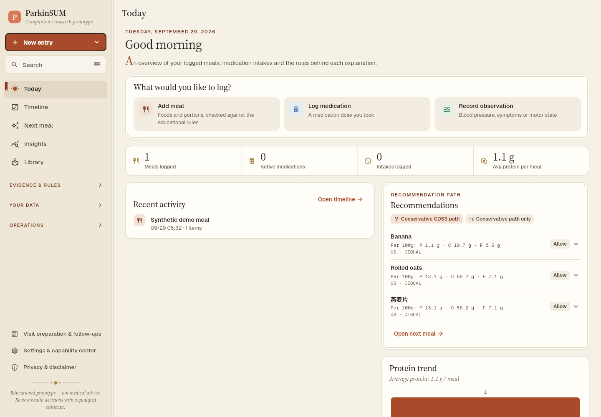
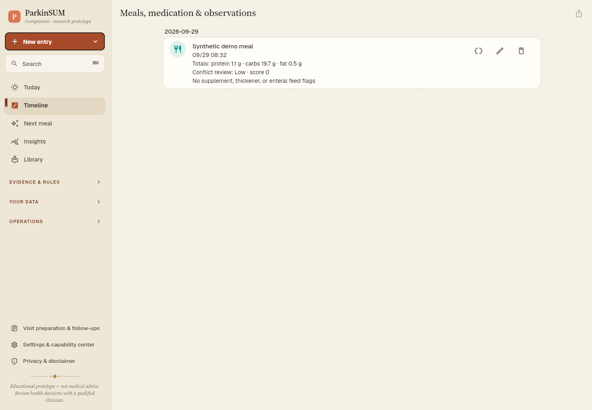
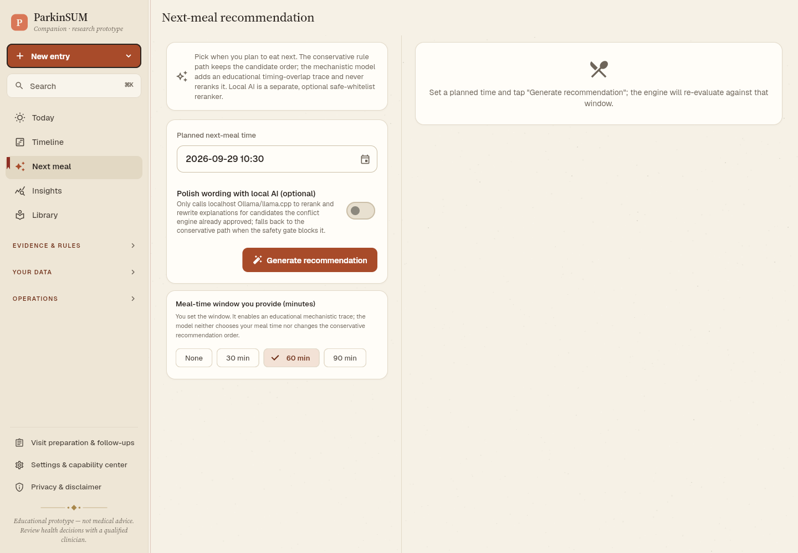
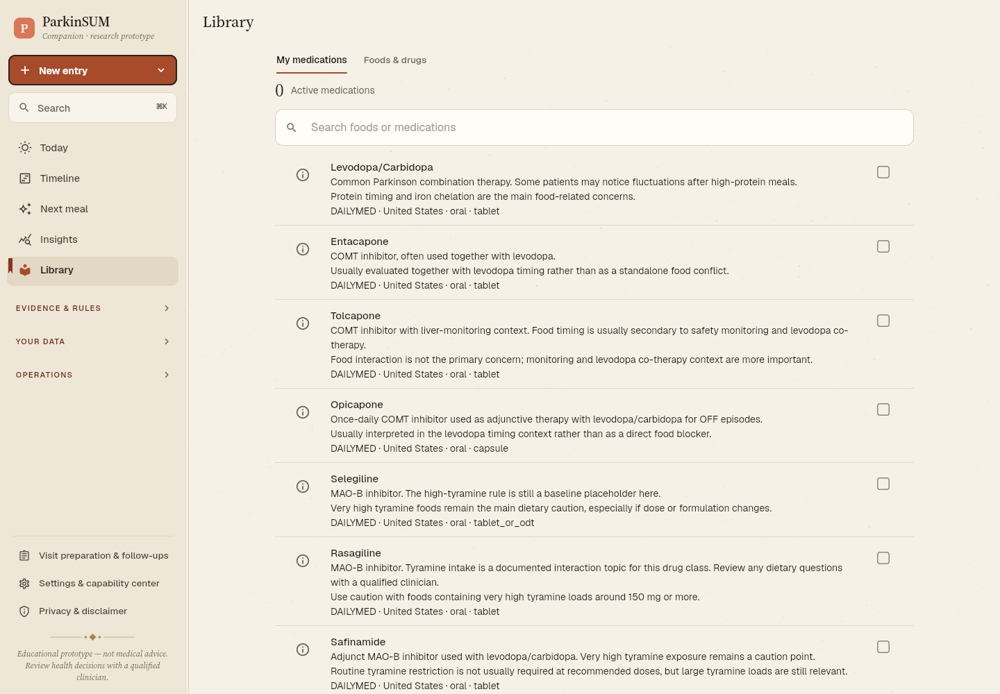

Five chapters, one entry composer, a shared command palette.
The Paper edition · September 2026
A research notebook.
An inspectable story.
Meal and medication context, deterministic explanations, and the evidence behind an educational model — brought together in one local-first workspace.
Educational prototype. Synthetic public demos only. Not medical advice; no clinical validation is claimed.
Rules retain authority over classifications, scores, and safety gates.
Missing context and unsupported interpretations stay visible.
I. The everyday workspace
Five chapters.
A clear place for each task.
Paper pairs warm opaque surfaces with readable typography and a responsive sidebar. The app's finite transitions respect reduced motion settings.
Start with an entry.
One composer for a meal, medication intake, or observation, alongside recent activity and previews.
Keep the sequence.
Browse records, inspect details, edit entries, and choose explicit export actions.
Compare with context.
Set a time window and inspect candidate explanations, missing information, and model limitations.
Read your records.
Explore descriptive logging and protein-distribution views, without inferring clinical outcomes.
Check the source.
Review selected medications and the food/medication catalog with source and jurisdiction context.
Evidence, data, and operational tools are reachable from the sidebar or ⌘K / Ctrl+K. Local AI configuration lives in Settings → Advanced.








Actual local-mode browser captures, 29 September 2026, 1440 × 1000. Fresh synthetic profile; one banana meal, zero selected medications, no AI consent. Captured from the development worktree, not a final-commit binary attestation. Capture provenance & evidence limits ↗
II. The evidence workspace
Look beyond the result.
The Algorithm Observatory uses fixed, non-personal scenarios to make the model's behavior inspectable. Production-derived traces and static contracts are labeled separately.
Traces with their limits.
Inspect explanation trees, configuration identities, missingness, and bounded sensitivity. Registry coverage is distinct from executable trace coverage.
Read the design decision ↗A case you can replay.
Review synthetic rule cases, authored expectations, and content-bound replay capsules. A passing case establishes agreement only with its scoped assertions.
Open the workbench guide ↗Know what is implemented.
Separate runtime features, fixture tests, reports, and proposals. Development-only standards experiments do not establish general interoperability.
Inspect capabilities & limits ↗The mechanistic model remains trace-only.
Its educational curves do not choose a meal time or reorder recommendations. Optional consent-gated loopback AI may only rerank rule-screened, non-BLOCK candidates or polish existing wording; it cannot override rule-owned decisions, scores, evidence, or safety gates.
III. Follow the work
Choose your way in.
Interactive app
Run the local demo
Open the Flutter workspace with a fresh synthetic profile and the local backend.
Engineering reviewReproduce the checks
Find commands, prerequisites, expected results, and the meaning of each check.
Development recordRead the update
Follow the September source update separately from versioned release artifacts.
Guided tourOpen the project guide
Review the architecture, demo route, and boundaries in a compact visual wiki.
A boundary, not a footnote
For educational review.
ParkinSUM is not a medical device or clinical decision tool. Its model is not clinically calibrated. Do not use it for diagnosis, treatment, medication timing, dietary guidance, patient care, or emergencies.
Public demonstrations use synthetic or sample data. Owner-entered records and exports may contain sensitive information and must stay out of public media.